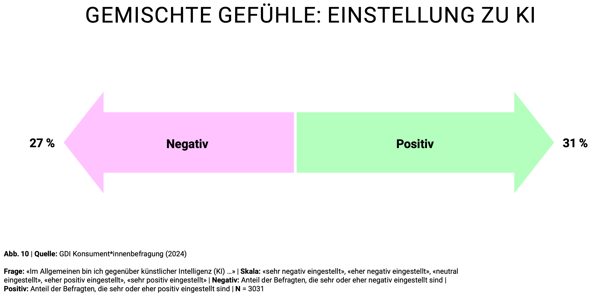
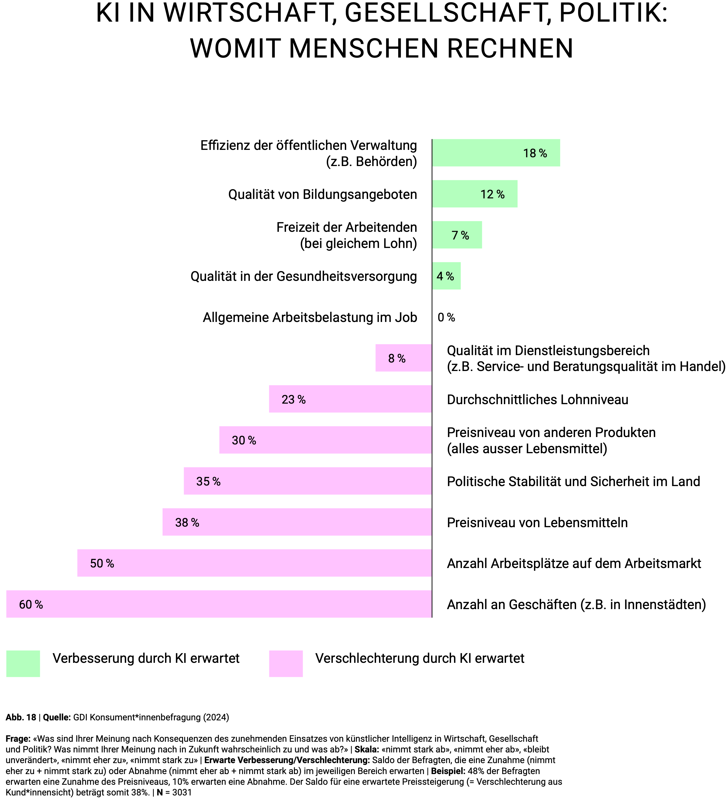
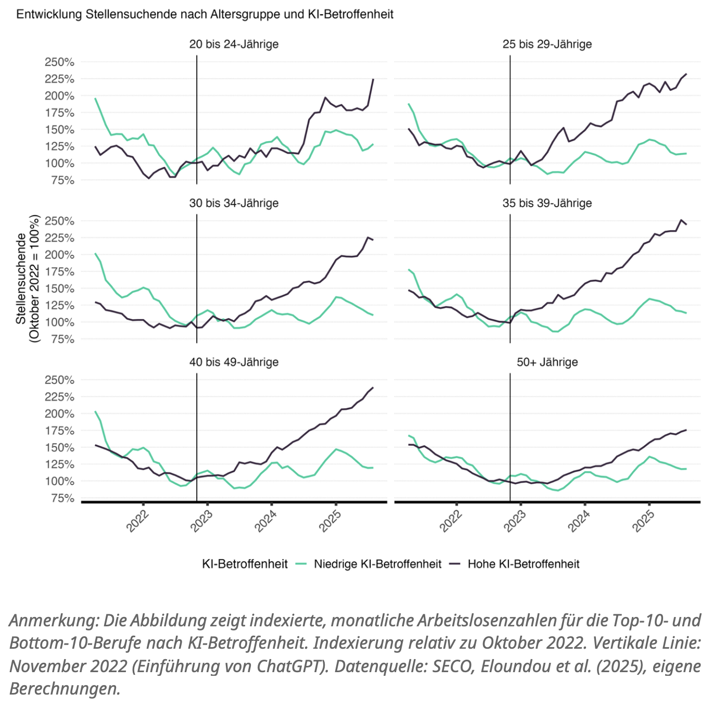
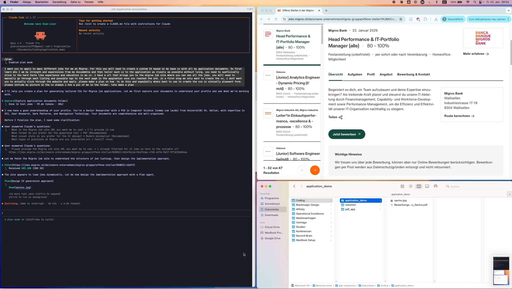
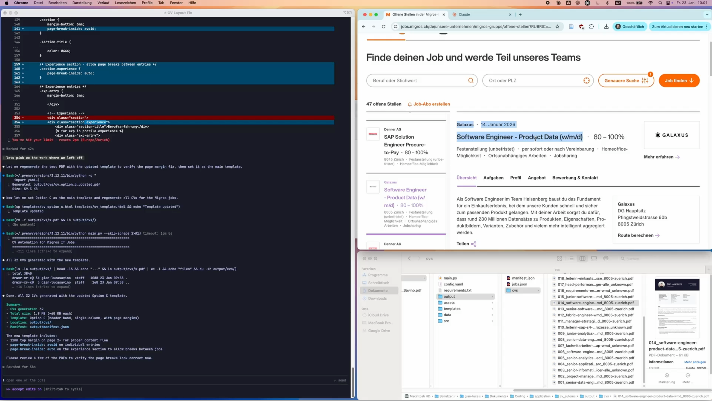

Wenn Maschinen mitdenken
Wie KI unsere Arbeitswelt neu definiert — von der gesellschaftlichen Stimmungslage über den Skill Mismatch bis hin zum vollautomatisierten Bewerbungsprozess.
Künstliche Intelligenz hat in den letzten Jahren nicht nur unser technologisches, sondern inzwischen auch unser Arbeitsleben grundlegend verändert. Wir sind zwar noch nicht bei der allmächtigen Superintelligenz angekommen, doch die Auswirkungen auf Gesellschaft, Arbeitsmarkt und Recruiting sind bereits heute spürbar. In einer kürzlich veröffentlichten Studie hat das Gottlieb Duttweiler Institut diesen gesellschaftlichen Wandel genauer untersucht.
Was die Menschen über KI denken
Mithilfe einer repräsentativen Umfrage im DACH-Raum — 3’031 Konsument*innen und 287 Manager*innen mit Führungsverantwortung — hat das GDI gefragt: Was denken die Menschen über KI, und welche Entwicklungen erwarten sie?
Die Antwort ist ambivalent. 31 Prozent der Befragten stehen KI im Allgemeinen positiv gegenüber, 27 Prozent eher negativ. Die Menschen verspüren Unsicherheit beim Gedanken an die Zukunft — sie haben gemischte Gefühle.

Wenn es um konkrete Erwartungen geht, zeigt sich ein differenzierteres Bild. Die meisten Veränderungen werden im Beruf antizipiert: 64 Prozent erwarten dort grosse Umwälzungen. Ähnlich hoch sind die Erwartungen beim Lernen und Weiterbilden. Etwas weniger, aber immer noch deutlich, erwarten die Befragten Veränderungen im Alltag, beim Einkaufen und in der sozialen Kommunikation.
Schaut man genauer hin, welche Veränderungen positiv und welche negativ erwartet werden, überwiegen die Befürchtungen. Die Befragten sehen zwar einige Verbesserungen — speziell bei der Effizienz der öffentlichen Verwaltung. Doch die Sorgen drehen sich vor allem um Geld und Arbeit: 60 Prozent erwarten eine Verschlechterung bei der Anzahl der Geschäfte in Innenstädten, 50 Prozent bei den verfügbaren Arbeitsplätzen.

50% der Befragten erwarten eine Verschlechterung bei der Anzahl der Arbeitsplätze — das klassische Argument, dass KI Jobs ersetzen wird.
GDI Konsument*innenbefragung, 2024Der Schweizer Arbeitsmarkt spürt die Folgen
Die Sorge ist nicht unbegründet. Eine kürzlich veröffentlichte Studie des KOF an der ETH Zürich zeigt einen eindeutigen Zusammenhang: Seit der Einführung von ChatGPT im November 2022 steigt die Zahl der Stellensuchenden in KI-betroffenen Berufen deutlich stärker als in weniger betroffenen Berufen — und das über alle Altersgruppen hinweg.

Programmierer und Softwareentwickler gehören zu den Verlierern. Jüngere Beschäftigte sind stärker betroffen als Ältere — allerdings ist der Unterschied kleiner als in den USA. Die Frage drängt sich auf: Wenn KI vor allem Programmier- und administrative Arbeit ersetzt, welche Skills sind dann noch gefragt?
Der Skill Mismatch
Ein aktueller Bericht der Wharton University liefert Antworten. Die Forscher haben systematisch untersucht, welche Fähigkeiten Arbeitnehmende in ihren Lebensläufen anbieten und welche Unternehmen in Stellenanzeigen nachfragen. Das Ergebnis ist aufschlussreich.
Stärker nachgefragt als angeboten
- Public Speaking
- Digital Marketing
- Public Relations
Stärker angeboten als nachgefragt
- Problem Solving
- Communication
- Leadership & Accountability
Die am stärksten nachgefragten Skills sind nicht technisch, sondern drehen sich um zwischenmenschliche Fähigkeiten. Gleichzeitig werben viele Bewerber*innen mit breiten, generalistischen Signalen wie «Kommunikation» oder «Leadership» — Fähigkeiten, die so verbreitet sind, dass sie kaum noch differenzieren.
Mit KI wird das noch relevanter: Standardarbeit und Routine werden automatisiert. Damit rückt das in den Vordergrund, was knapp, spezifisch und wertschöpfend ist.
Was daraus folgt
Für Arbeitgeber
- Fähigkeiten systematisch messen — Überangebote und Engpässe sichtbar machen
- Rollen in konkrete Tasks zerlegen — menschliche Stärken klar von KI-Aufgaben trennen
- Vergütung an den tatsächlichen Wert von Skills koppeln, nicht an Jobtitel
Für Arbeitnehmende
- Ein Skill-Portfolio aufbauen statt nur einen Lebenslauf pflegen
- Spezifische, rollenrelevante Fähigkeiten steigern den Marktwert
- KI gezielt nutzen, um Umsetzungskompetenz schneller aufzubauen
Quelle: Wharton University & Accenture
Soft Skills schlagen technische Fähigkeiten
Die wachsende Bedeutung sozialer Kompetenzen lässt sich auch empirisch belegen. Eine in der Financial Times veröffentlichte Studie zeigt: Soziale Kompetenzen sind heute stärker mit Beschäftigung und Löhnen verbunden als rein technische Fähigkeiten. Berufe, die hohe soziale und hohe mathematische Anforderungen stellen, verzeichnen den grössten Lohnanstieg seit 1980.

KI automatisiert zunehmend standardisierte, quantitative Arbeit. Der Wert menschlicher Arbeit verlagert sich hin zu Zusammenarbeit, Kommunikation, Urteilsvermögen und Teamkoordination.
Wissen, Wollen, Wirken
Das GDI hat in seiner Future-Skills-Studie ein Modell entwickelt, das erklärt, welche menschlichen Fähigkeiten in einer KI-geprägten Zukunft bestehen bleiben. Es basiert auf drei Säulen:
Wissen
- Online-Kompetenzen
- Statistiken verstehen
- KI-Verständnis
- Lebenslange Lernfähigkeit
- Wissenschaftliches Denken
Wollen
- Langfristige Ziele formulieren
- Unternehmerisch denken
- Kreativität & Fantasie
- Neugier & Explorationslust
- Selbstbestimmung
Wirken
- Teamfähigkeit
- Selbstwirksamkeit
- Gruppenentscheidungen
- Anpassungsfähigkeit
- Mut, Fehler zu machen
Maschinen werden immer besser im Wissen — Systeme wie ChatGPT haben quasi das Wissen der Welt gelesen. Und auch im Wirken machen sie Fortschritte: Von der Landwirtschaft über die Baubranche bis hin zu den aktuellen Entwicklungen in der Robotik.
Aber Maschinen wollen nichts. Sie haben keine Ambitionen, keine Träume, keine Ziele. Das bleibt den Menschen vorbehalten. Ziele definieren wird zum Future Skill.
GDI Future Skills Studie, 2020Auch wenn der Fokus auf menschlichen Fähigkeiten liegt, bleibt KI-Kompetenz unverzichtbar: ein technologisches Verständnis, die Fähigkeit Statistiken zu interpretieren, und die Einschätzung, wie sich KI auf die eigene Arbeit auswirkt.
KI im HR: Der Agentic Bewerbungsprozess
Wie konkret sich KI bereits auf die tägliche Arbeit im Personalwesen auswirkt, zeigt ein Beispiel aus der Schweiz.
Bewerbungsdossiers werden dank KI immer einfacher zu erstellen. Das senkt die Aufwandshürde, eine Bewerbung zu verschicken — dramatisch. Die Nutzung von ChatGPT zum Aufhübschen von Anschreiben ist dabei nur der Anfang.
Vibe Application
Hergeleitet vom aktuell beliebten Begriff «Vibe Coding» — den Code nicht mehr selbst schreiben, sondern einem Agenten sagen was man will. Das gleiche Prinzip funktioniert bereits für den Bewerbungsprozess: Einem KI-Agenten sagen, welchen Job man sucht, und ihn die ganze Arbeit machen lassen.
Mithilfe von Claude Code, dem KI-Agenten von Anthropic, lässt sich eine vollständige Bewerbungspipeline automatisieren: Jobprofile automatisch scannen, CVs passgenau auf jede Stelle ausrichten, Skillmatching nutzen, Massenbewerbungen verschicken.
100 Bewerbungen am Tag pro Person ist keine Zukunftsmusik. Das passiert heute.


Was bedeutet das für HR?
70 Prozent der Firmen, die mit KI experimentieren, tun dies im HR-Bereich. Die häufigsten Anwendungen: Stelleninserate verfassen, administrative Aufgaben automatisieren und Kandidaten-Matching nach Kompetenzen.
Chancen
- Schnell in KI-gestützte Filterprozesse investieren
- Persönliche Kontakte rücken in den Fokus
- Effizienz: tausende Matches in Sekunden
- Breitere Talentpools, schnellere Besetzung
Risiken
- Gefahr von Fehlbesetzungen bei Vollautomatisierung
- Soft Skills und Cultural Fit werden unsichtbar
- Schlechtere Bewerbungserfahrungen
- Authentizitätsverlust: Erst am ersten Arbeitstag treffen echte Menschen aufeinander
Agentic Hiring: Agent vs. Agent

Die Zukunft des Recruitings könnte so aussehen: KI-Agenten bewerben sich autonom bei KI-Recruiting-Systemen. Agent spricht mit Agent. Die Effizienzgewinne sind enorm — aber die Frage bleibt, ob ein Prozess, in dem sich Menschen erst am ersten Arbeitstag wirklich begegnen, noch zu den richtigen Besetzungen führt.
Die Empfehlung: Kandidatenorientierung priorisieren, menschliche Interaktion beibehalten, regulatorische Entwicklungen beobachten — und in die Weiterbildung der eigenen Recruiter investieren.
Studien zum Nachlesen